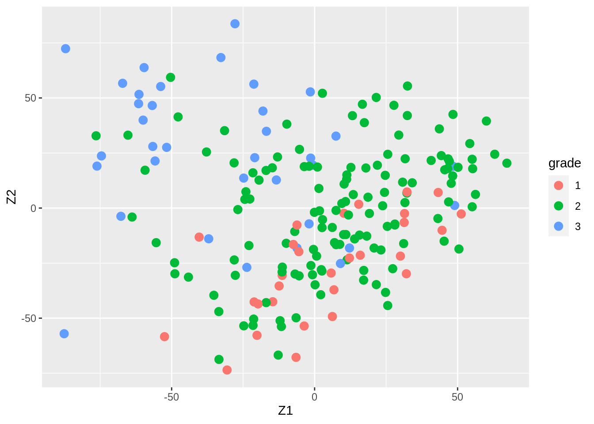
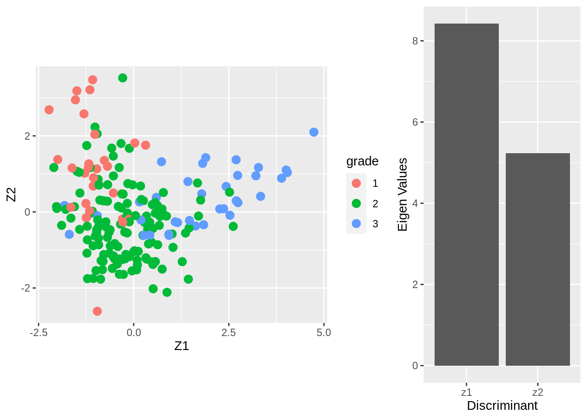
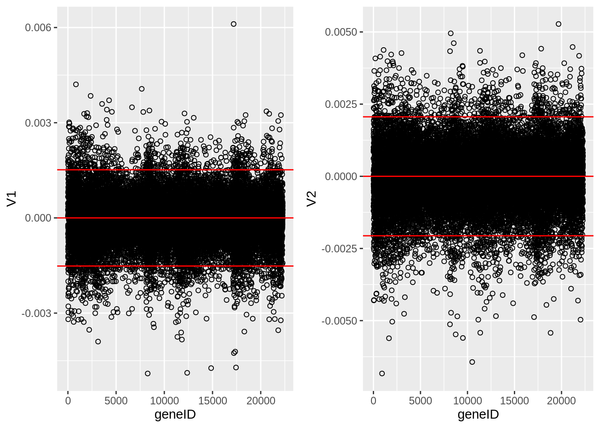
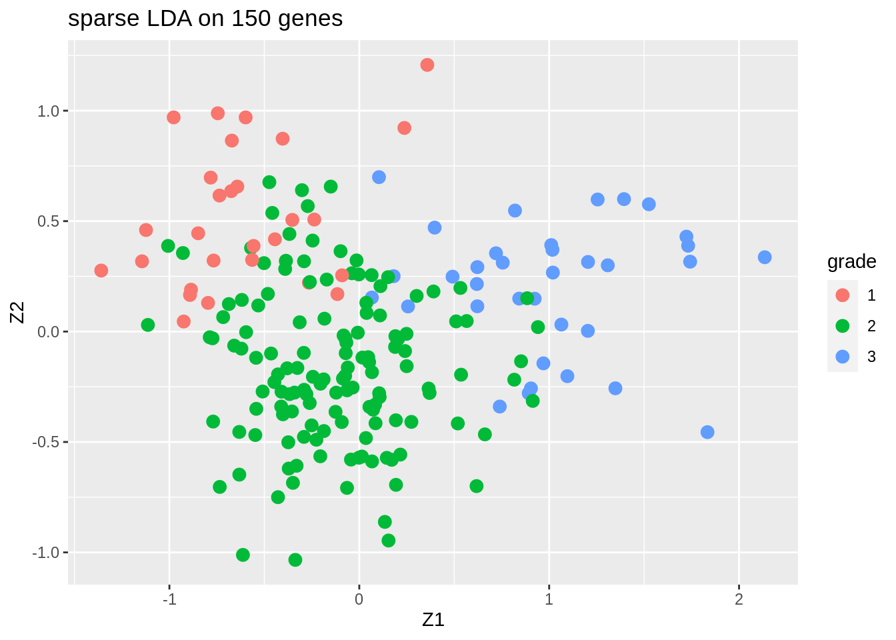
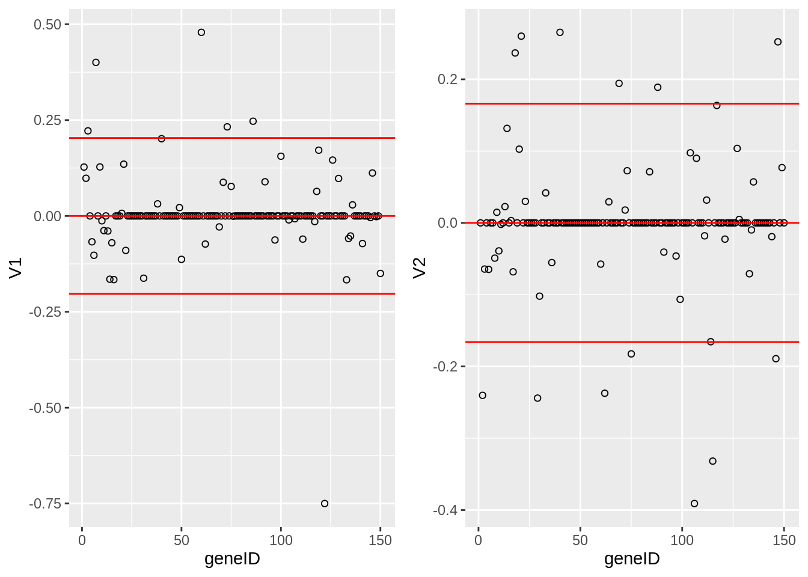
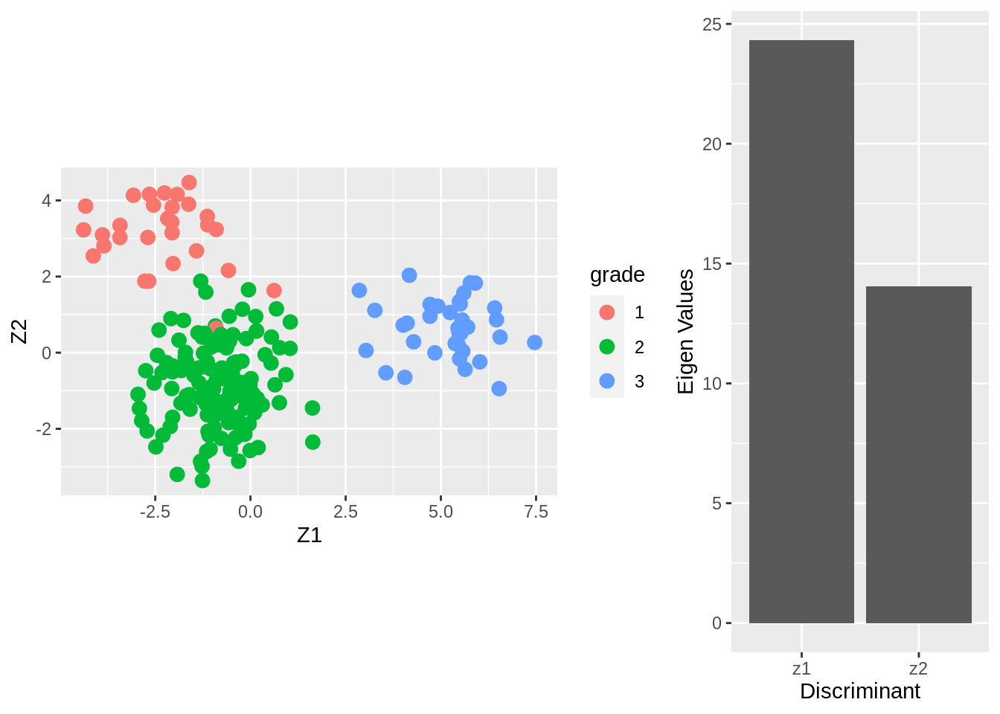
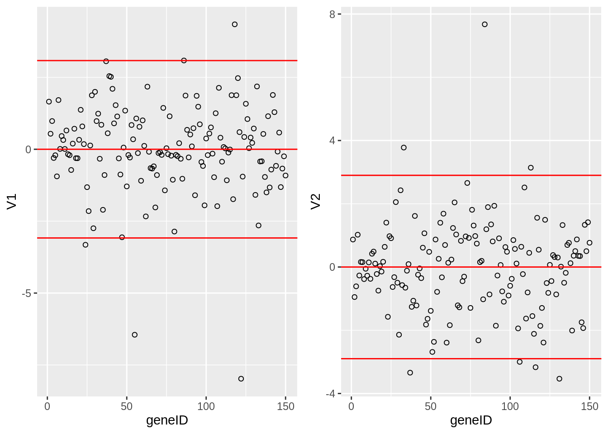

library(tidyverse)## ── Attaching packages ─────────────────────────────────────── tidyverse 1.3.1 ──## ✔ ggplot2 3.3.5 ✔ purrr 0.3.4
## ✔ tibble 3.1.5 ✔ dplyr 1.0.7
## ✔ tidyr 1.1.4 ✔ stringr 1.4.0
## ✔ readr 2.0.1 ✔ forcats 0.5.1## ── Conflicts ────────────────────────────────────────── tidyverse_conflicts() ──
## ✖ dplyr::filter() masks stats::filter()
## ✖ dplyr::lag() masks stats::lag()library(gridExtra)##
## Attaching package: 'gridExtra'## The following object is masked from 'package:dplyr':
##
## combineSchmidt et al., 2008, Cancer Research, 68, 5405-5413
Gene expression patterns in n=200 breast tumors were investigated (p=22283 genes)
After surgery the tumors were graded by a pathologist (stage 1,2,3)
#BiocManager::install("genefu")
#BiocManager::install("breastCancerMAINZ")
library(genefu)
library(breastCancerMAINZ)
data(mainz)
X <- t(exprs(mainz)) # gene expressions
n <- nrow(X)
H <- diag(n)-1/n*matrix(1,ncol=n,nrow=n)
X <- H%*%X
Y <- pData(mainz)$grade
table(Y)## Y
## 1 2 3
## 29 136 35svdX <- svd(X)
k <- 2
Zk <- svdX$u[,1:k] %*% diag(svdX$d[1:k])
colnames(Zk) <- paste0("Z",1:k)
Zk %>%
as.data.frame %>%
mutate(grade = Y %>% as.factor) %>%
ggplot(aes(x= Z1, y = Z2, color = grade)) +
geom_point(size = 3)
Fisher’s construction of LDA is simple: it allows for classification in a dimension-reduced subspace of \(\mathbb{R}^p\).
First we assume that \(Y\) can only take two values (0/1).
Fisher aimed for a direction, say \(\mathbf{a}\), in the \(p\)-dimensional predictor space such that the orthogonal projections of the predictors, \(\mathbf{x}^t\mathbf{a}\), show maximal ratio between the between and within sums of squares: \[ \mathbf{v} = \text{ArgMax}_a \frac{\mathbf{a}^t\mathbf{B}\mathbf{a}}{\mathbf{a}^t\mathbf{W}\mathbf{a}} \text{ subject to } {\mathbf{a}^t\mathbf{W}\mathbf{a}}=1, \] where \(\mathbf{W}\) and \(\mathbf{B}\) are the within and between covariance matrices of \(\mathbf{x}\). The restriction is introduced to obtain a (convenient) unique solution.
In the training dataset, let \(\mathbf{x}_{ik}\) denote the \(i\)th \(p\)-dimensional observation in the \(k\)th group (\(k=0,1\) referring to \(Y=0\) and \(Y=1\), resp.), \(i=1,\ldots, n_k\).
Let \(z_{ik}=\mathbf{a}^t\mathbf{x}_{ik}\) denote the orthogonal projection of \(\mathbf{x}_{ik}\) onto \(\mathbf{a}\)
For the one-dimensional \(z\)-observations, consider the following sum of squares: \[ \text{SSE}=\text{within sum of squares} = \sum_{k=0,1}\sum_{i=1}^{n_k} (z_{ik}-\bar{z}_k)^2 \] \[ \text{SSB}=\text{between sum of squares} = \sum_{k=0,1}\sum_{i=1}^{n_k} (\bar{z}_{k}-\bar{z})^2 = \sum_{k=0,1} n_k (\bar{z}_{k}-\bar{z})^2 \] with \(\bar{z}_k\) the sample mean of \(z_{ik}\) within group \(k\), and \(\bar{z}\) the sample mean of all \(z_{ik}\).
To reformulate SSE and SSB in terms of the \(p\)-dimensional \(\mathbf{x}_{ik}\), we need the sample means \[ \bar{z}_k = \frac{1}{n_k} \sum_{i=1}^{n_k} z_{ik} = \frac{1}{n_k} \sum_{i=1}^{n_k} \mathbf{a}^t\mathbf{x}_{ik} = \mathbf{a}^t \frac{1}{n_k} \sum_{i=1}^{n_k} \mathbf{x}_{ik} = \mathbf{a}^t \bar{\mathbf{x}}_k \] \[ \bar{z} = \frac{1}{n}\sum_{k=0,1}\sum_{i=1}^{n_k} z_{ik} = \cdots = \mathbf{a}^t\bar{\mathbf{x}}. \]
SSE becomes \[ \text{SSE} = \sum_{k=0,1}\sum_{i=1}^{n_k} (z_{ik}-\bar{z}_k)^2 = \mathbf{a}^t \left(\sum_{k=0,1}\sum_{i=1}^{n_k} (\mathbf{x}_{ik}-\bar{\mathbf{x}}_k)(\mathbf{x}_{ik}-\bar{\mathbf{x}}_k)^t\right)\mathbf{a} \]
SSB becomes \[ \text{SSB} = \sum_{k=0,1} n_k (\bar{z}_{k}-\bar{z})^2 = \mathbf{a}^t \left(\sum_{k=0,1} n_k (\bar{\mathbf{x}_{k}}-\bar{\mathbf{x}})(\bar{\mathbf{x}_{k}}-\bar{\mathbf{x}})^t \right)\mathbf{a} \]
The \(p \times p\) matrix \[ \mathbf{W}=\sum_{k=0,1}\sum_{i=1}^{n_k} (\mathbf{x}_{ik}-\bar{\mathbf{x}}_k)(\mathbf{x}_{ik}-\bar{\mathbf{x}}_k)^t \] is referred to as the matrix of within sum of squares and cross products.
The \(p \times p\) matrix \[ \mathbf{B}=\sum_{k=0,1} n_k (\bar{\mathbf{x}_{k}}-\bar{\mathbf{x}})(\bar{\mathbf{x}_{k}}-\bar{\mathbf{x}})^t \] is referred to as the matrix of between sum of squares and cross products.
Note that on the diagonal of \(\mathbf{W}\) and \(\mathbf{B}\) you find the ordinary univariate within and between sums of squares of the individual components of \(\mathbf{x}\).
An equivalent formulation: \[ \mathbf{v} = \text{ArgMax}_a \mathbf{a}^t\mathbf{B}\mathbf{a} \text{ subject to } \mathbf{a}^t\mathbf{W}\mathbf{a}=1. \]
This can be solved by introducing a Langrange multiplier: \[ \mathbf{v} = \text{ArgMax}_a \mathbf{a}^t\mathbf{B}\mathbf{a} -\lambda(\mathbf{a}^t\mathbf{W}\mathbf{a}-1). \]
Calculating the partial derivative w.r.t. \(\mathbf{a}\) and setting it to zero gives \[\begin{eqnarray*} 2\mathbf{B}\mathbf{a} -2\lambda \mathbf{W}\mathbf{a} &=& 0\\ \mathbf{B}\mathbf{a} &=& \lambda \mathbf{W}\mathbf{a} \\ \mathbf{W}^{-1}\mathbf{B}\mathbf{a} &=& \lambda\mathbf{a}. \end{eqnarray*}\]
From the final equation we recognise that \(\mathbf{v}=\mathbf{a}\) is an eigenvector of \(\mathbf{W}^{-1}\mathbf{B}\), and \(\lambda\) is the corresponding eigenvalue.
The equation has in general \(\text{rank}(\mathbf{W}^{-1}\mathbf{B})\) solutions. In the case of two classes, the rank equals 1 and thus only one solution exists.
A training data set is used for the calculation of \(\mathbf{W}\) and \(\mathbf{B}\). \(\longrightarrow\) This gives the eigenvector \(\mathbf{v}\)
The training data is also used for the calculation of the centroids of the classes (e.g. the sample means, say \(\bar{\mathbf{x}}_1\) and \(\bar{\mathbf{x}}_2\)). \(\longrightarrow\) The projected centroids are given by \(\bar{\mathbf{x}}_1^t\mathbf{v}\) and \(\bar{\mathbf{x}}_2^t\mathbf{v}\).
A new observation with predictor \(\mathbf{x}\) is classified in the class for which the projected centroid is closest to the projected predictor \(z=\mathbf{x}^t\mathbf{v}\).
An advantage of this approach is that \(\mathbf{v}\) can be interpreted (similar as the loadings in a PCA) in terms of which predictors \(x_j\) are important to discriminate between classes 0 and 1.
When the outcome \(Y\) refers to more than two classes, say \(m\) classes, then Fisher’s method is constructed in exactly the same way. Now \[ \mathbf{W}^{-1}\mathbf{B}\mathbf{a} = \lambda\mathbf{a} \] will have \(r=\text{rank}(\mathbf{W}^{-1}\mathbf{B}) = \min(m-1,p,n)\) solutions (eigenvectors and eigenvalues). (\(n\): sample size of training data)
Let \(\mathbf{v}_j\) and \(\lambda_j\) denote the \(r\) solutions, and define
\(\mathbf{V}\): \(p\times r\) matrix with collums \(\mathbf{v}\)
\(\mathbf{L}\): \(r \times r\) diagonal matrix with elements \(\lambda_1 > \lambda_2 > \cdots > \lambda_r\)
The \(p\)-dimensional predictor data in \(\mathbf{X}\) may then be transformed to the \(r\)-dimensional scores \[ \mathbf{Z} = \mathbf{X}\mathbf{V}. \]
For eigenvectors \(\mathbf{v}_i\) and \(\mathbf{v}_j\), it holds that \[ \text{cov}\left[Z_i,Z_j\right] = \text{cov}\left[\mathbf{X}\mathbf{v}_i,\mathbf{X}\mathbf{v}_j\right]= \mathbf{v}_i^t \mathbf{W} \mathbf{v}_j = \delta_{ij} , \] in which the covariances are defined within groups. Hence, within the groups (classes) the scores are uncorrelated.
With high-dimensional predictors
Replace the \(p\times p\) matrices \(\mathbf{W}\) and \(\mathbf{B}\) by their diagonal matrices (i.e. put zeroes on the off-diagonal positions)
Sparse LDA by imposing an \(L_1\)-penalty on \(\mathbf{v}\).
Two approaches: Zhou et al. (2006), Journal of Computational and Graphical Statistics , 15, 265-286, and Clemmensen et al. (2011), Technometrics, 53.
Fisher’s LDA is illustrated on the breast cancer data with all three tumor stages as outcome.
We try to discriminate between the different stages according to the gene expression data of all genes.
We cache the result because the calculation takes 10 minutes.
breast.lda <- MASS::lda(x = X, grouping = Y)## Warning in lda.default(x, grouping, ...): variables are collinearVlda <- breast.lda$scaling
colnames(Vlda) <- paste0("V",1:ncol(Vlda))
Zlda <- X%*%Vlda
colnames(Zlda) <- paste0("Z",1:ncol(Zlda))
grid.arrange(
Zlda %>%
as.data.frame %>%
mutate(grade = Y %>% as.factor) %>%
ggplot(aes(x= Z1, y = Z2, color = grade)) +
geom_point(size = 3) +
coord_fixed(),
ggplot() +
geom_bar(aes(x = c("z1","z2"), y = breast.lda$svd), stat = "identity") +
xlab("Discriminant") +
ylab("Eigen Values"),
layout_matrix = matrix(
c(1,1,2),
nrow=1)
)
The columns of the matrix \(\mathbf{V}\) contain the eigenvectors. There are \(\min(3-2,22283,200)=2\) eigenvectors. The \(200\times 2\) matrix \(\mathbf{Z}\) contains the scores on the two Fisher discriminants.
The eigenvalue \(\lambda_j\) can be interpreted as the ratio \[ \frac{\mathbf{v}_j^t\mathbf{B}\mathbf{v}_j}{\mathbf{v}_j^t\mathbf{W}\mathbf{v}_j} , \] or (upon using \(\mathbf{v}_j^t\mathbf{W}\mathbf{v}_j=1\)) the between-centroid sum of squares (in the reduced dimension space of the Fisher discriminants) \[ \mathbf{v}_j^t\mathbf{B}\mathbf{v}_j. \]
From the screeplot of the eigenvalues we see that the first dimension is more important than the second (not hugely) in terms of discriminating between the groups.
From the scatterplot we can see that there is no perfect separation (discrimination) between the three tumor stages (quite some overlap).
To some extent the first Fisher discriminant dimension discriminates stage 3 (green dots) from the other two stages, and the second dimension separates stage 1 (black dots) from the two others.
grid.arrange(
Vlda %>%
as.data.frame %>%
mutate(geneID = 1:nrow(Vlda)) %>%
ggplot(aes(x = geneID, y = V1)) +
geom_point(pch=21) +
geom_hline(yintercept = c(-2,0,2)*sd(Vlda[,1]), col = "red"),
Vlda %>%
as.data.frame %>%
mutate(geneID = 1:nrow(Vlda)) %>%
ggplot(aes(x = geneID, y = V2)) +
geom_point(pch=21) +
geom_hline(yintercept = c(-2,0,2)*sd(Vlda[,2]), col = "red"),
ncol = 2)
The loadings of the Fisher discriminants are within the columns of the \(\mathbf{V}\) matrix.
Since we have 22283 genes, each discriminant is a linear combination of 22283 gene expression. Instead of looking at the listing of 22283 loadings, we made an index plot (no particular ordering of genes on horizontal axis).
The red horizontal reference lines correspond to the average of the loading (close to zero) and the average plus and minus twice the standard deviation of the loadings.
If no genes had any “significant” discriminating power, then we would expect approximately \(95\%\) of all loadings within the band. Thus loadings outside of the band are of potential interest and may perhaps be discriminating between the three tumor stages.
In the graphs presented here we see many loadings within the bands, but also many outside of the band.
We repeat the analysis, but now with the sparse LDA method of Clemmensen et al. (2011).
We only present the results of the sparse LDA based on a random subset of 150 genes (ordering of genes in datamatrix is random).
The discrimination seems better than with classical LDA based on all genes. This is very likely caused by too much noise in the full data matrix with over 20000 predictors.
# BiocManager::install("sparseLDA")
library(sparseLDA)##
## Attaching package: 'sparseLDA'## The following object is masked from 'package:BiocGenerics':
##
## normalizeYDummy <- data.frame(
Y1 = ifelse(Y == 1, 1, 0),
Y2 = ifelse(Y == 2, 1, 0),
Y3 = ifelse(Y == 3, 1, 0)
)
X2 <- X[,1:150]
breast.slda <- sda(x = X2,
y = as.matrix(YDummy),
lambda = 1e-6,
stop = -50,
maxIte = 25,
trace = TRUE)## ite: 1 ridge cost: 92.13987 |b|_1: 5.558217
## ite: 2 ridge cost: 89.61364 |b|_1: 5.704252
## ite: 3 ridge cost: 88.37327 |b|_1: 5.833096
## ite: 4 ridge cost: 87.70409 |b|_1: 5.92812
## ite: 5 ridge cost: 88.05903 |b|_1: 5.852153
## ite: 6 ridge cost: 87.50389 |b|_1: 5.954857
## ite: 7 ridge cost: 87.81367 |b|_1: 5.895391
## ite: 8 ridge cost: 87.85366 |b|_1: 5.887668
## ite: 9 ridge cost: 87.79671 |b|_1: 5.898385
## ite: 10 ridge cost: 87.76715 |b|_1: 5.903966
## ite: 11 ridge cost: 87.7727 |b|_1: 5.902912
## ite: 12 ridge cost: 87.77724 |b|_1: 5.902051
## ite: 13 ridge cost: 87.77948 |b|_1: 5.901627
## ite: 14 ridge cost: 87.78059 |b|_1: 5.901418
## ite: 15 ridge cost: 87.78113 |b|_1: 5.901315
## ite: 16 ridge cost: 87.7814 |b|_1: 5.901265
## ite: 17 ridge cost: 87.78153 |b|_1: 5.90124
## ite: 18 ridge cost: 87.7816 |b|_1: 5.901227
## ite: 1 ridge cost: 134.7777 |b|_1: 5.379261
## ite: 2 ridge cost: 134.7777 |b|_1: 5.379261
## final update, total ridge cost: 222.5593 |b|_1: 11.28049Vsda <- matrix(0, nrow=ncol(X2), ncol=2)
Vsda[breast.slda$varIndex,] <- breast.slda$beta
colnames(Vsda) <- paste0("V",1:ncol(Vsda))
Zsda <- X2%*%Vsda
colnames(Zsda) <- paste0("Z",1:ncol(Zsda))
Zsda %>%
as.data.frame %>%
mutate(grade = Y %>% as.factor) %>%
ggplot(aes(x= Z1, y = Z2, color = grade)) +
geom_point(size = 3) +
ggtitle("sparse LDA on 150 genes")
grid.arrange(
Vsda %>%
as.data.frame %>%
mutate(geneID = 1:nrow(Vsda)) %>%
ggplot(aes(x = geneID, y = V1)) +
geom_point(pch=21) +
geom_hline(yintercept = c(-2,0,2)*sd(Vsda[,1]), col = "red") ,
Vsda %>%
as.data.frame %>%
mutate(geneID = 1:nrow(Vsda)) %>%
ggplot(aes(x = geneID, y = V2)) +
geom_point(pch=21) +
geom_hline(yintercept = c(-2,0,2)*sd(Vsda[,2]), col = "red"),
ncol = 2)
breast.lda150 <- MASS::lda(x = X2, grouping = Y)
Vlda <- breast.lda150$scaling
colnames(Vlda) <- paste0("V",1:ncol(Vlda))
Zlda <- X2%*%Vlda
colnames(Zlda) <- paste0("Z",1:ncol(Zlda))
grid.arrange(
Zlda %>%
as.data.frame %>%
mutate(grade = Y %>% as.factor) %>%
ggplot(aes(x= Z1, y = Z2, color = grade)) +
geom_point(size = 3) +
coord_fixed(),
ggplot() +
geom_bar(aes(x = c("z1","z2"), y = breast.lda150$svd), stat = "identity") +
xlab("Discriminant") +
ylab("Eigen Values"),
layout_matrix = matrix(
c(1,1,2),
nrow=1)
)
grid.arrange(
Vlda %>%
as.data.frame %>%
mutate(geneID = 1:nrow(Vlda)) %>%
ggplot(aes(x = geneID, y = V1)) +
geom_point(pch=21) +
geom_hline(yintercept = c(-2,0,2)*sd(Vlda[,1]), col = "red"),
Vlda %>%
as.data.frame %>%
mutate(geneID = 1:nrow(Vlda)) %>%
ggplot(aes(x = geneID, y = V2)) +
geom_point(pch=21) +
geom_hline(yintercept = c(-2,0,2)*sd(Vlda[,2]), col = "red"),
ncol = 2)
LDA on all 22283 genes gave poorer result than on 150 genes. This is probably caused by numerical instability when working with large \(\mathbf{W}\) and \(\mathbf{B}\) matrices
Sparse LDA gave slightly poorer result than LDA on the subset of 150 genes. This may be caused by overfitting of the LDA.
When (sparse) LDA is used to build a prediction model/classifier, then CV methods, or splitting of dataset into training and test datasets should be used to allow for an honest evaluation of the final prediction model.
The graphs in the first two Fisher discriminant dimensions shown on the previous slides should only be used for data exploration.
When the objective is to try to understand differences between groups in a high dimensional space, Fisher LDA is preferred over PCA.
Session info
## [1] "2021-10-20 13:36:43 UTC"## ─ Session info ───────────────────────────────────────────────────────────────
## setting value
## version R version 4.1.1 (2021-08-10)
## os macOS Catalina 10.15.7
## system x86_64, darwin17.0
## ui X11
## language (EN)
## collate en_US.UTF-8
## ctype en_US.UTF-8
## tz UTC
## date 2021-10-20
##
## ─ Packages ───────────────────────────────────────────────────────────────────
## ! package * version date lib
## P AIMS * 1.24.0 2021-05-19 [?]
## P AnnotationDbi 1.54.1 2021-06-08 [?]
## P assertthat 0.2.1 2019-03-21 [?]
## P backports 1.2.1 2020-12-09 [?]
## P Biobase * 2.52.0 2021-05-19 [?]
## P BiocFileCache 2.0.0 2021-05-19 [?]
## P BiocGenerics * 0.38.0 2021-05-19 [?]
## P biomaRt * 2.48.3 2021-08-15 [?]
## P Biostrings 2.60.2 2021-08-05 [?]
## P bit 4.0.4 2020-08-04 [?]
## P bit64 4.0.5 2020-08-30 [?]
## P bitops 1.0-7 2021-04-24 [?]
## P blob 1.2.2 2021-07-23 [?]
## P bootstrap 2019.6 2019-06-17 [?]
## P breastCancerMAINZ * 1.30.0 2021-05-20 [?]
## P broom 0.7.9 2021-07-27 [?]
## P bslib 0.3.0 2021-09-02 [?]
## P cachem 1.0.6 2021-08-19 [?]
## P cellranger 1.1.0 2016-07-27 [?]
## P class 7.3-19 2021-05-03 [?]
## P cli 3.0.1 2021-07-17 [?]
## P cluster * 2.1.2 2021-04-17 [?]
## P codetools 0.2-18 2020-11-04 [?]
## P colorspace 2.0-2 2021-06-24 [?]
## P crayon 1.4.1 2021-02-08 [?]
## P curl 4.3.2 2021-06-23 [?]
## P DBI 1.1.1 2021-01-15 [?]
## P dbplyr 2.1.1 2021-04-06 [?]
## P digest 0.6.28 2021-09-23 [?]
## P dplyr * 1.0.7 2021-06-18 [?]
## P e1071 * 1.7-9 2021-09-16 [?]
## P elasticnet 1.3 2020-05-15 [?]
## P ellipsis 0.3.2 2021-04-29 [?]
## P evaluate 0.14 2019-05-28 [?]
## P fansi 0.5.0 2021-05-25 [?]
## P farver 2.1.0 2021-02-28 [?]
## P fastmap 1.1.0 2021-01-25 [?]
## P filelock 1.0.2 2018-10-05 [?]
## P forcats * 0.5.1 2021-01-27 [?]
## P fs 1.5.0 2020-07-31 [?]
## P future 1.22.1 2021-08-25 [?]
## P future.apply 1.8.1 2021-08-10 [?]
## P genefu * 2.24.2 2021-05-23 [?]
## P generics 0.1.0 2020-10-31 [?]
## P GenomeInfoDb 1.28.4 2021-09-09 [?]
## P GenomeInfoDbData 1.2.6 2021-10-20 [?]
## P ggplot2 * 3.3.5 2021-06-25 [?]
## P globals 0.14.0 2020-11-22 [?]
## P glue 1.4.2 2020-08-27 [?]
## P gridExtra * 2.3 2017-09-09 [?]
## P gtable 0.3.0 2019-03-25 [?]
## P haven 2.4.3 2021-08-04 [?]
## P highr 0.9 2021-04-16 [?]
## P hms 1.1.1 2021-09-26 [?]
## P htmltools 0.5.2 2021-08-25 [?]
## P httr 1.4.2 2020-07-20 [?]
## P iC10 * 1.5 2019-02-08 [?]
## P iC10TrainingData * 1.3.1 2018-08-24 [?]
## P impute * 1.66.0 2021-05-19 [?]
## P IRanges 2.26.0 2021-05-19 [?]
## P jquerylib 0.1.4 2021-04-26 [?]
## P jsonlite 1.7.2 2020-12-09 [?]
## P KEGGREST 1.32.0 2021-05-19 [?]
## P KernSmooth 2.23-20 2021-05-03 [?]
## P knitr 1.33 2021-04-24 [?]
## P labeling 0.4.2 2020-10-20 [?]
## P lars 1.2 2013-04-24 [?]
## P lattice 0.20-45 2021-09-22 [?]
## P lava 1.6.10 2021-09-02 [?]
## P lifecycle 1.0.1 2021-09-24 [?]
## P limma 3.48.3 2021-08-10 [?]
## P listenv 0.8.0 2019-12-05 [?]
## P lubridate 1.7.10 2021-02-26 [?]
## P magrittr 2.0.1 2020-11-17 [?]
## P MASS 7.3-54 2021-05-03 [?]
## P Matrix 1.3-4 2021-06-01 [?]
## P mclust 5.4.7 2020-11-20 [?]
## P mda 0.5-2 2020-06-29 [?]
## P memoise 2.0.0 2021-01-26 [?]
## P modelr 0.1.8 2020-05-19 [?]
## P munsell 0.5.0 2018-06-12 [?]
## P pamr * 1.56.1 2019-04-22 [?]
## P parallelly 1.28.1 2021-09-09 [?]
## P pillar 1.6.3 2021-09-26 [?]
## P pkgconfig 2.0.3 2021-10-20 [?]
## P png 0.1-7 2013-12-03 [?]
## P prettyunits 1.1.1 2020-01-24 [?]
## P prodlim * 2019.11.13 2019-11-17 [?]
## P progress 1.2.2 2019-05-16 [?]
## P proxy 0.4-26 2021-06-07 [?]
## P purrr * 0.3.4 2020-04-17 [?]
## P R6 2.5.1 2021-08-19 [?]
## P rappdirs 0.3.3 2021-01-31 [?]
## P Rcpp 1.0.7 2021-07-07 [?]
## P RCurl 1.98-1.4 2021-08-17 [?]
## P readr * 2.0.1 2021-08-10 [?]
## P readxl 1.3.1 2019-03-13 [?]
## P renv 0.14.0 2021-07-21 [?]
## P reprex 2.0.1 2021-08-05 [?]
## P rlang 0.4.11 2021-04-30 [?]
## P rmarkdown 2.10 2021-08-06 [?]
## P rmeta 3.0 2018-03-20 [?]
## P RSQLite 2.2.8 2021-08-21 [?]
## P rstudioapi 0.13 2020-11-12 [?]
## P rvest 1.0.1 2021-07-26 [?]
## P S4Vectors 0.30.0 2021-05-19 [?]
## P sass 0.4.0 2021-05-12 [?]
## P scales 1.1.1 2020-05-11 [?]
## P sessioninfo 1.1.1 2018-11-05 [?]
## P sparseLDA * 0.1-9 2016-09-22 [?]
## P stringi 1.7.4 2021-08-25 [?]
## P stringr * 1.4.0 2019-02-10 [?]
## P SuppDists 1.1-9.5 2020-01-18 [?]
## P survcomp * 1.42.0 2021-05-19 [?]
## P survival * 3.2-13 2021-08-24 [?]
## P survivalROC 1.0.3 2013-01-13 [?]
## P tibble * 3.1.5 2021-09-30 [?]
## P tidyr * 1.1.4 2021-09-27 [?]
## P tidyselect 1.1.1 2021-04-30 [?]
## P tidyverse * 1.3.1 2021-04-15 [?]
## P tzdb 0.1.2 2021-07-20 [?]
## P utf8 1.2.2 2021-07-24 [?]
## P vctrs 0.3.8 2021-04-29 [?]
## P withr 2.4.2 2021-04-18 [?]
## P xfun 0.25 2021-08-06 [?]
## P XML 3.99-0.8 2021-09-17 [?]
## P xml2 1.3.2 2020-04-23 [?]
## P XVector 0.32.0 2021-05-19 [?]
## P yaml 2.2.1 2020-02-01 [?]
## P zlibbioc 1.38.0 2021-05-19 [?]
## source
## Bioconductor
## Bioconductor
## CRAN (R 4.1.0)
## CRAN (R 4.1.0)
## Bioconductor
## Bioconductor
## Bioconductor
## Bioconductor
## Bioconductor
## CRAN (R 4.1.0)
## CRAN (R 4.1.0)
## standard (@1.0-7)
## CRAN (R 4.1.0)
## CRAN (R 4.1.0)
## Bioconductor
## CRAN (R 4.1.0)
## CRAN (R 4.1.1)
## CRAN (R 4.1.0)
## CRAN (R 4.1.0)
## CRAN (R 4.1.1)
## CRAN (R 4.1.0)
## CRAN (R 4.1.1)
## CRAN (R 4.1.1)
## CRAN (R 4.1.0)
## CRAN (R 4.1.0)
## CRAN (R 4.1.0)
## CRAN (R 4.1.0)
## CRAN (R 4.1.0)
## CRAN (R 4.1.0)
## CRAN (R 4.1.0)
## CRAN (R 4.1.0)
## CRAN (R 4.1.0)
## standard (@0.3.2)
## CRAN (R 4.1.0)
## CRAN (R 4.1.0)
## CRAN (R 4.1.0)
## CRAN (R 4.1.0)
## CRAN (R 4.1.0)
## CRAN (R 4.1.0)
## CRAN (R 4.1.0)
## CRAN (R 4.1.0)
## CRAN (R 4.1.0)
## Bioconductor
## CRAN (R 4.1.0)
## Bioconductor
## Bioconductor
## CRAN (R 4.1.0)
## CRAN (R 4.1.0)
## CRAN (R 4.1.0)
## CRAN (R 4.1.0)
## CRAN (R 4.1.0)
## CRAN (R 4.1.0)
## CRAN (R 4.1.0)
## CRAN (R 4.1.0)
## CRAN (R 4.1.0)
## CRAN (R 4.1.0)
## CRAN (R 4.1.0)
## CRAN (R 4.1.0)
## Bioconductor
## Bioconductor
## CRAN (R 4.1.0)
## CRAN (R 4.1.0)
## Bioconductor
## CRAN (R 4.1.1)
## CRAN (R 4.1.0)
## CRAN (R 4.1.0)
## CRAN (R 4.1.0)
## CRAN (R 4.1.0)
## CRAN (R 4.1.0)
## CRAN (R 4.1.0)
## Bioconductor
## CRAN (R 4.1.0)
## CRAN (R 4.1.0)
## CRAN (R 4.1.0)
## CRAN (R 4.1.1)
## CRAN (R 4.1.1)
## CRAN (R 4.1.0)
## CRAN (R 4.1.0)
## CRAN (R 4.1.0)
## CRAN (R 4.1.0)
## CRAN (R 4.1.0)
## CRAN (R 4.1.0)
## CRAN (R 4.1.0)
## CRAN (R 4.1.0)
## Github (r-lib/pkgconfig@b81ae03)
## CRAN (R 4.1.0)
## CRAN (R 4.1.0)
## CRAN (R 4.1.0)
## CRAN (R 4.1.0)
## CRAN (R 4.1.0)
## CRAN (R 4.1.0)
## CRAN (R 4.1.0)
## CRAN (R 4.1.0)
## CRAN (R 4.1.0)
## CRAN (R 4.1.1)
## CRAN (R 4.1.1)
## CRAN (R 4.1.0)
## CRAN (R 4.1.0)
## CRAN (R 4.1.0)
## CRAN (R 4.1.0)
## CRAN (R 4.1.1)
## CRAN (R 4.1.0)
## CRAN (R 4.1.0)
## CRAN (R 4.1.0)
## CRAN (R 4.1.0)
## Bioconductor
## CRAN (R 4.1.0)
## CRAN (R 4.1.0)
## CRAN (R 4.1.0)
## CRAN (R 4.1.0)
## CRAN (R 4.1.1)
## CRAN (R 4.1.0)
## CRAN (R 4.1.0)
## Bioconductor
## CRAN (R 4.1.0)
## CRAN (R 4.1.0)
## CRAN (R 4.1.0)
## CRAN (R 4.1.0)
## standard (@1.1.1)
## CRAN (R 4.1.0)
## CRAN (R 4.1.0)
## CRAN (R 4.1.0)
## standard (@0.3.8)
## CRAN (R 4.1.0)
## CRAN (R 4.1.1)
## CRAN (R 4.1.0)
## CRAN (R 4.1.0)
## Bioconductor
## CRAN (R 4.1.0)
## Bioconductor
##
## [1] /Users/runner/work/HDDA21/HDDA21/renv/library/R-4.1/x86_64-apple-darwin17.0
## [2] /private/var/folders/24/8k48jl6d249_n_qfxwsl6xvm0000gn/T/RtmpIWQsJk/renv-system-library
##
## P ── Loaded and on-disk path mismatch.